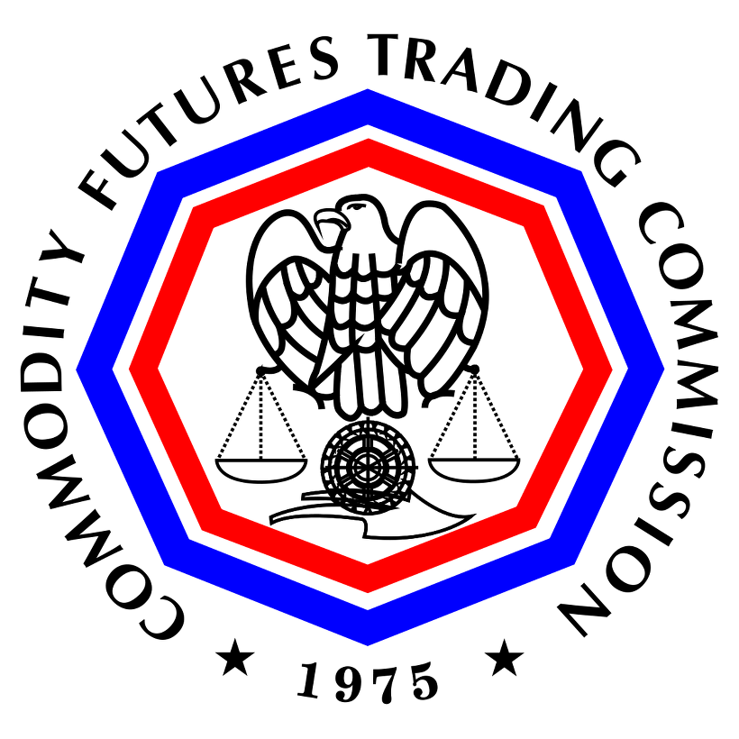
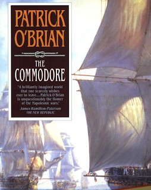
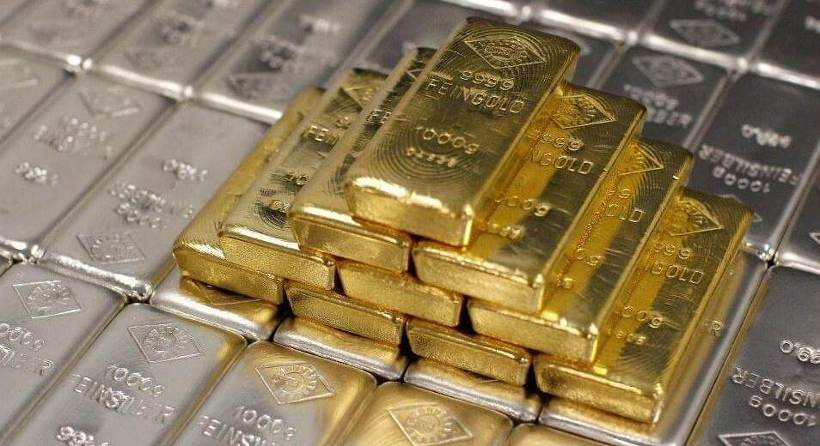
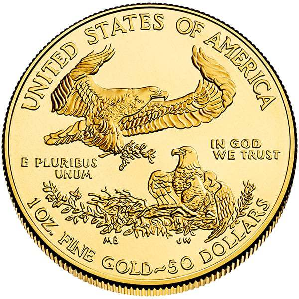
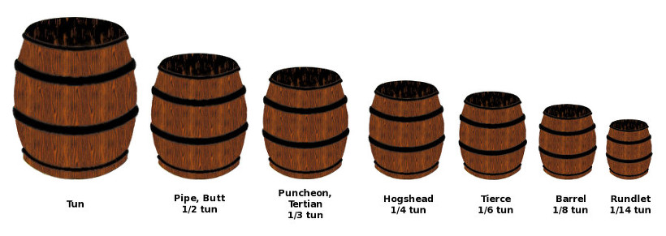

가상화폐에 관세와 부가가치세를 내게 될까 ?
게시: 2018-03-14T21:51:37+09:00
최근인 3월 초, 미국 연방법원에서 '가상화폐는 화폐가 아니라 상품(commodity)'이라는 판결을 내렸다는 보도가 있었습니다.
https://www.reuters.com/article/us-usa-cftc-bitcoin/virtual-currencies-are-commodities-u-s-judge-rules-idUSKCN1GI32C http://www.asiatoday.co.kr/view.php?key=20180308010004104
보통 상품이라고 번역되는 commodity라는 단어는 곡물, 석유, 구리, 금 등과 같은 원자재 상품을 말하는 것입니다. 이런 판결은 미국 상품 선물 거래 위원회(Commodity Futures Trading Commission, CFTC)가 어떤 개인 및 그의 회사를 사기 혐의로 고소하면서 벌어졌습니다. 흔히 있는 일입니다만, 가상화폐 투자 전문가라고 자처하는 개인이 회사를 세우고 투자자들에게 유료로 투자 조언을 제공해주기로 했는데, 돈만 받고는 갑자기 회사 웹사이트를 닫아버렸다는 것이지요. 문제는 이걸 왜 CFTC가 개입하느냐 하는 것이었습니다. 거기에 대해 연방 법원은 가상화폐는 법정 화폐가 아니라 금이나 은 같은 귀금속 정도의 물건이라고 판단하여, CFTC가 개입하는 것이 맞다고 판결을 내린 것이지요.

돈과 상품은 엄연히 다릅니다. 가장 대표적인 문제가 세금입니다. 가령 외국에서 달러화를 가지고 입국할 때 그것도 수입품이라고 관세를 물지는 않습니다. 그러나 금과 은 같은 상품에 대해서는 관세 뿐만 아니라 부가가치세를 냅니다. 가상화폐의 장점 중 하나가 대형 은행에 수수료를 내지 않고도 (이론상) 국제 송금이 가능하다는 것인데, 여기에 관세와 부가세가 끼어들면 이야기가 무척 암울해집니다.
하지만 같은 금이라도, 금괴 형태로 된 것은 상품이지만 정식 금화로 주조된 것은 분명 화폐입니다. 금화에 대해서도 관세와 부가가치세를 내나요 ?
이 기사를 보니, 문득 전에 나폴레옹 당시 영국 해군 소설인 Aubrey-Maturin 시리즈 중에서 굉장히 재미있게 읽었던 부분이 생각나서 짧게 발췌 번역해봤습니다.

The Commodore by Patrick O'Brian (배경 : 1812년 스페인 해안 인근의 비무장 영국 소형 선박 링글 Ringle 호) -------
(아일랜드 출신의 군의관인 스티븐 머투어린은 영국 해군성 정보부을 위해 일하는 비밀 스파이이기도 합니다. 그는 프랑스를 위해 일하는 영국 정부 내의 간첩망을 소탕하는데 큰 기여를 하지만, 그로 인해 고위 귀족인 정적의 박해를 받습니다. 그 결과로 자신과 식솔들이 체포될 위기에 처하자 그는 재빨리 자신의 전재산인 엄청난 양의 금화 궤짝들과 어린 딸, 그리고 식솔인 클라리스 옥스 부인과 선원 파딘을 모두 데리고 야반도주를 합니다. 그는 스페인으로 탈출하는데, 이때 친구 잭 오브리 함장이 마련해준 작은 클리퍼(clipper) 선인 링글 호를 타고 프랑스 사략선의 추격을 뿌리치는 모험도 겪으며 천신만고 끝에 스페인 코루냐 항구에 도착합니다. : 역주)
스티븐이 이물에 서서 붐비는 항구 도시를 보며 미소짓고 있을 때, 경험 많은 선원인 모울드가 아무일 없다는 듯 천연덕스럽게 그의 옆으로 다가와 입술 한쪽 구석만 써서 나직히 말했다.
"저와 제 동료들은 그로인(Groyne, 코루냐를 영국인들이 부르는 이름) 항구를 (자신들의 출신 항구인) 셀머스톤처럼 잘 압니다. 우리가 브랜디를 밀수하러 오는 곳이 바로 여기거든요. 만약에 선생님께서, 음... 우리 식대로 말해서 신중하게 화물을 내리고 싶으시다면 말입니다, 저희가 아주 정직한 패거리를 알아요. 걔들이 정직하지 않다면 이미 오래 전에 목이 졸렸을 거거든요. 확실합니다."
"고맙네, 모울드, 이렇게 친절한 제안을 해주다니 정말 고맙군. 하지만 이번에는 말일세, 이번만 말이야, 화물을 아주 규정대로 내리고자 하네. 이 항구 사령관과 그 수하들에게도 그렇게 말할 생각이라네. 어쨌거나 자네와 자네 동료들의 친절에는 정말 감사하네."
몇 시간 뒤, 스티븐은 정말 완벽하게 입을 다문 소년 함장 리드와 함께 선실에 앉아 두명의 고위 항구 관리자들을 만나고 있었다. (이 작은 링글 호의 함장인 리드는 10대 후반의 사관후보생(midshipman)인데, 스페인어는 전혀 못 합니다. 그에 비해 스티븐은 스페인어, 카탈루냐어, 프랑스어 등 여러 언어에 능통합니다. : 역주)
"최근 여러분이 보신 영국 해군 전함인 벨로나 호에 딸린 부속 선박(tender)인 이 배에 실린 전쟁 물자는 아시다시피 판매용 상품(merchanside)이 아닙니다. 그 외에는 저 개인 재산인 귀중품이 좀 있을 뿐입니다. 저는 그 귀중품을 이 도시에 있는 '성령과 통상 은행'(the Bank of the Holy Ghost and of Commerce)에 예치할 생각입니다. 그 국장인 돈 호세 루이스를 제가 잘 알거든요. 사실 제 귀중품은 애초에 바로 그 친구가 제게 보내준 것입니다. 제 귀중품은 금화(minted gold)로서, 영국 기니(guinea) 금화로 주조되어 있습니다. 물론 그에 따라 관세에서 면제됩니다."
"금액이 큰 가요 ?"
"기니 금화의 개수는 제가 잘 모르겠습니다. 하지만 그 무게는 제가 알기로는 5에서 6톤(ton) 사이입니다. 실은 그 이유 때문에 이 배를 부두에 바로 접안하는 자리에 배정해주십사 정중히 부탁드리는 바입니다. 그리고 만약 가능하다면, 그 궤짝들을 옮길 수 있도록 믿을 만하고 건장한 사내 한 20명 정도를 붙여주시기 바랍니다. 여기 (두 자루의 두둑한 작은 캔버스 천 가방을 향해 손짓을 하며) 여러분이 적절하다고 생각하시는대로 나누시도록 사례금조로 금화 일부를 준비해 두었습니다. 그럼 모든 것에 동의하시는 것으로 봐도 될까요, 신사 여러분 ? 만약 그렇다면 저는 빨리 상륙해서 돈 호세에게 금화에 대해 이야기하고 또 주지사께 문안 인사도 드리고자 합니다."
"아, 선생님" 두 관료는 외쳤다. "주지사께서는 지금쯤 바야돌리드로 가는 길 중간쯤에 계실 겁니다. 섭섭해하시겠네요."
"하지만 돈 파트리시오 피츠제랄드 이 사베드라 대령은 아직 시내에 있겠지요 ?"
"아 물론입니다, 그럼요. 돈 파트리시오는 그의 부하들과 함께 시내에 있습니다."
-------------------------------------------
와, 5~6톤의 금화라니, 정말 금괴왕이 따로 없네요. 저렇게 돈도 많고 힘있는 친구도 많으니 모든 일이 술술 잘 풀리는 건 동서고금을 막론하고 다 마찬가지인 모양입니다.
나폴레옹 시대인 17~18세기에는 지폐(bank note)도 많이 쓰였습니다만 금화와 은화도 당연히 널리 사용되었습니다. 금괴를 수입할 때는 관세를 물게 되어있지만, 같은 금이라도 금화로 주조된 경우에는 상품이 아니라 화폐로 인정이 되어 관세가 면제되었던 모양입니다. 현대는 어떨까요 ?
미국 관세청 홈페이지를 보니 금으로 된 목걸이나 금반지 등의 장신구류와는 달리, 금화 뿐만 아니라 금으로 된 메달, 골드바 같은 지금(bullion)의 경우 관세를 물리지 않습니다. 그래도 신고를 해야 한다고 합니다. 특히 금화는 화폐로 취급되므로 해당 조폐국이 아닌 곳에서 모조품으로 만들어진 금화는 진짜 금화와 같은 순도를 가지고 있다고 하더라도, 일종의 위조화폐라는 이유로 아예 수입이 금지됩니다.

우리나라의 경우는 좀더 까다롭습니다. 금화가 아닌 골드바나 골드 메달 같은 경우 3%의 관세를 내야 할 뿐 아니라, 10%의 부가가치세를 내야 합니다. 생각보다는 이야기가 복잡해서, 골드바를 수입하는 경우도 스위스 등 FTA 협약이 맺어져 있는 나라에서 수입되는 금은 관세가 면세되고, 또 그런 귀금속류를 수입하도록 관련 기관에서 추천장을 받은 수입업체는 부가세도 나중에 환급받을 수 있답니다.
골드바는 누가 봐도 그냥 상품(commodity)이니 관세와 부가세 대상이 된다고 쳐도, 금화는 어떨까요 ? 화폐에는 세금을 부과하지 않는다는 취지 때문에 어느 국가든 국가에서 정식으로 주조한 금화인 경우 관세 0%를 부과한답니다. 다만 묘한 조항이 붙는데, 결제 수단이 아니라 소장용 또는 투자용 등의 목적으로 포장된 금화는 화폐가 아니라 상품으로 간주하여 부가세를 매긴다고 합니다. 실제로 아메리칸 이글이나 남아프리카 크루거 금화를 부동산이나 주식, 자동차 사는데 결제수단으로 이용하는 사람은 거의 없으니, 결국 관세는 안 내도 되는데, 대신 부가세는 내는 모양입니다.

그러니까, 가상화폐가 금괴와 같은 상품으로 취급된다고 해서 꼭 관세와 부가세를 내라는 법은 없는 셈입니다. 하지만 반대로 규정에 따라 최악의 경우 가상화폐에 대해서도 부가가치세는 물론 관세까지 내야 할 수도 있다는 이야기입니다. 가령 우리나라에서 유통되는 가상화폐 중 상당수는 중국 채굴장에서 만들어진 것이라고 하던데, 중국과 우리나라는 FTA 조약을 맺은 나라가 아니쟎아요 ? 또 금괴와는 달리 가상화폐는 해외에서 수입하는 것이 국익에 꼭 유리하다고만 볼 수는 없으니, 굳이 부가가치세를 면세해줄 이유도 없습니다.
가상화폐에 대해서는 아직 법규정이 전혀 없어서, 관세나 부가세 및 양도 차익에 대해 세금을 어떻게 매기게 될지 정해진 바가 없는 것 같습니다. 결국 관건은 가상화폐가 실제 상거래에서 결제수단으로 사용된다면 관세와 부가세 등은 면제받을텐데, 그게 아니라 그냥 소장용, 투자용으로만 축적될 뿐 실제로는 안 쓰인다고 하면 어쩌면 과세 대상이 될 수도 있나 봅니다. 아마 미국 등지에서 먼저 뭔가 정해지면 우리나라도 그에 준해서 규정이 마련되지 않을까 합니다. 제 개인적인 예측으로는 세관을 통과하는 것이 아니라 통신망을 타고 이동할 뿐만 아니라, 대체 이 비트코인이 중국 채굴장에서 만들어진 것인지 국내 데이터센터에서 만들어진 것인지 기술적으로 구별할 방법이 없는 상황에서 과연 관세를 물릴 수 있을지 의구심이 들긴 합니다. 부가세의 경우도 모호합니다. 금화 같은 경우도 개인끼리 사고 팔 때는 부가세를 내는 것 같지는 않지만, 은행이나 인터넷 쇼핑몰 등의 사업자가 개인들에게 판매할 때는 부가세를 매깁니다. 가상화폐는 어떻게 될지 진짜 모르겠네요.
사족 : 저 위 소설에서 영국인인 스티븐이 스페인 관료들에게 금화 무게로 톤(ton)을 이야기하는 장면이 있지요 ? 1톤은 1000kg이고, kg은 미터법입니다. 프랑스 대혁명에서 나온지 얼마 안 되지도 않은 미터법을, 당시 프랑스와 적국이던 영국 및 스페인 사람들이 사용했을 것 같지는 않습니다. 혹시 작가인 패트릭 오브라이언이 실수를 한 것일까요 ?
아닙니다. 원래 톤(ton)은 툰(tun)이라는 큰 술통에서 파생된 무게 단위로서, 미터법과는 무관하게 예전부터 사용되던 것입니다. 원래의 어원은 참치를 뜻하는 그리스어 thunnos에서 나왔다고 하네요. (옛날 참치는 정말 컸나 보군요 !) 현대 미터법으로 하면 1016kg = 영국식 1 ton이라네요. 미터법에서 나온 톤, 즉 metric ton은 정확하게 스펠링하면 프랑스식으로 tonne이라고 써야 한답니다. 즉 1000kg = 1 tonne인 것이지요. 저 위 소설에서 이야기된 무게 단위 톤은 tonne이 아니라 ton이라고 스펠링 되어 있습니다.

Source : https://help.cbp.gov/app/answers/detail/a_id/322/~/importing-gold-coins%2C-medals%2C-and-bullion http://ecustoms.tistory.com/5119 (대한민국 관세청 블로그) http://www.nts.go.kr/call/vat/2015_04/htm/13e210.htm http://www.nts.go.kr/call/vat/2014_02/htm/13s000.htm https://en.wikipedia.org/wiki/Ton
https://en.wikipedia.org/wiki/Tun_(unit)